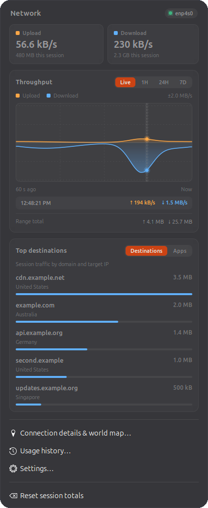
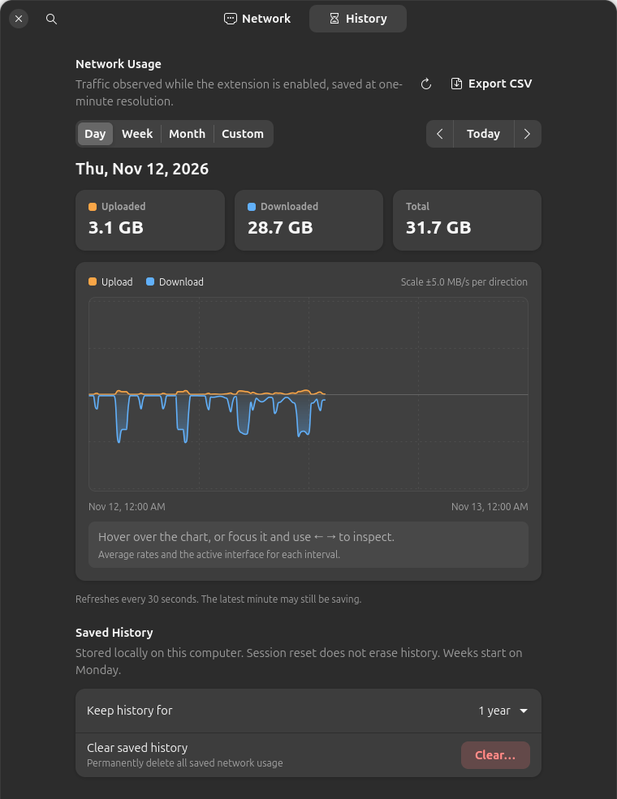
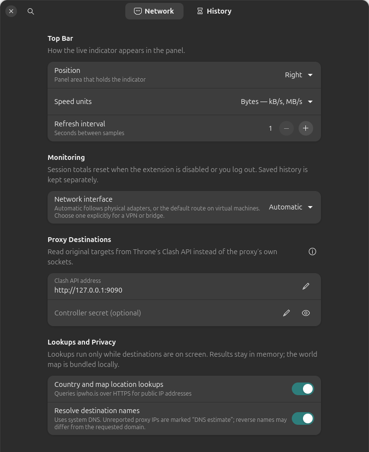
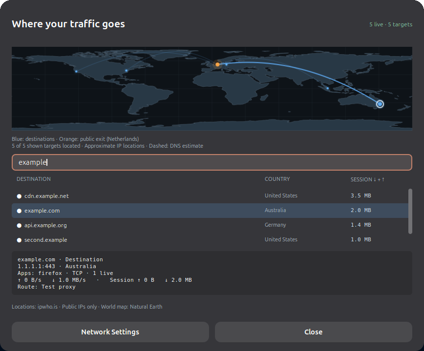

Stable top-bar indicator
Stacked speeds beside a ten-bar chart. Numbers and units use fixed monospace widths, so the panel never jitters as speeds change.
Live upload and download in the top bar, a mirrored traffic chart in the dropdown, up to a year of local history, and a world map of where your connections go. Private by design.
$ gnome-extensions install --force topbar-network@farvisun.local.shell-extension.zip

One shared scale, one centre line, and gaps wherever nothing was observed. Sleep, failed reads and interface changes never turn into fake spikes. Try the chart below with synthetic traffic.
Demo data is generated in your browser. The real extension reads /proc/net/dev on your machine.
Built for people who keep an eye on bandwidth, VPNs and proxies, and want answers without a heavyweight monitoring stack.
Stacked speeds beside a ten-bar chart. Numbers and units use fixed monospace widths, so the panel never jitters as speeds change.
Switch between Live, 1H, 24H and 7D. Hover or use the arrow keys to read exact rates and timestamps for any interval.
Browse days, weeks, months or any custom range with totals for each. Keep 7 days to a year, and export the selection as CSV.
See which processes and domains moved the most data this session, with live rates and relative bars. No root required.
A searchable list and map of where connections go, with approximate country locations. The map is bundled, so no tiles are requested.
Pick the interface that matters, or let Automatic avoid double counting. Connect a Throne / Clash API to see real targets behind a proxy.
The dropdown follows your system accent colour, and the settings are plain libadwaita. All screenshots use synthetic data.



A network monitor should not phone home. This one has no telemetry, no accounts and no background service, and its two optional lookups are off with one switch each.
/proc/net/dev and ss. No packets are captured.~/.local/share/topbar-network. Never uploaded.0600 file, outside GSettings, and only goes to a loopback address.ipwho.is over HTTPS for public IPs only, while destinations are on screen. Domain names are never sent.Install the release zip with the standard GNOME tooling. You can also use Extension Manager.
Grab topbar-network@farvisun.local.shell-extension.zip from the latest release.
Run this from the folder that contains the zip.
GNOME 50 loads new extensions at login. After signing back in:
Requires GNOME Shell 50 and ss from iproute2 (preinstalled on most distributions) for the app ranking. No root access is requested.
GNOME Shell 50. Extensions are tied to the Shell’s JavaScript APIs, so other versions are not declared in metadata.json.
Not in Automatic mode. It sums physical interfaces and ignores virtual ones. With no physical device it follows the default route. For a VPN, bridge or container, choose an interface explicitly in Settings.
As versioned daily JSON under ~/.local/share/topbar-network/history/. Use Settings → History → Clear… to delete it, and choose a retention from 7 days to a year. Disabling the extension does not delete it.
App totals come from TCP socket statistics across all interfaces, while interface totals come from the kernel’s interface counters. UDP/QUIC and connections that open and close between samples are not attributed to apps.
Yes, with Throne (or any sing-box / Clash-compatible controller). Enable its Clash API on a loopback address, then enter the address and optional secret in Settings. The integration is read-only.
GNOME Shell on Wayland caches JavaScript modules and the stylesheet for the session, so a fresh login is the reliable way to load them.